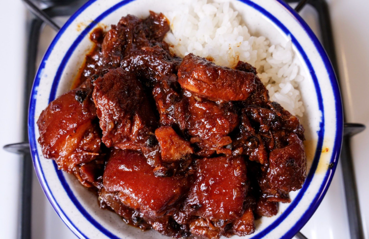

Adobo

Description
Adobo is a popular Filipino dish and cooking process in Philippine cuisine.
In its base form, pork is first browned in oil, and then marinated and simmered in vinegar,
salt and soy sauce, and garlic.
It is occasionally been considered the unofficial national dish in the Philippines
Ingredients
- 1 cup distilled white vinegar
- 1 cup soy sauce
- 1/2 cup ketchup
- 1 tablespoon minced garlic
- 3 bay leaves
- 1 teaspoon fresh-ground black
- 2 1/2 pounds lean pork, cut into 1 inch cubes
- 1 pound small green beans, trimmed (Optional)
Steps
- Stir together the vinegar, soy sauce, ketchup, garlic, and bay leaves in a large sauce pan.
- Add the cubed pork, and bring to a boil over high heat.
- Reduce heat to medium-low, cover, and simmer until the pork is tender, about 2 1/2 hours.
- Stir occasionally.
- If using the green beans, add them the last half hour of cooking.